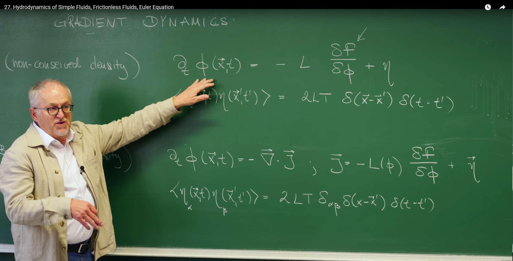
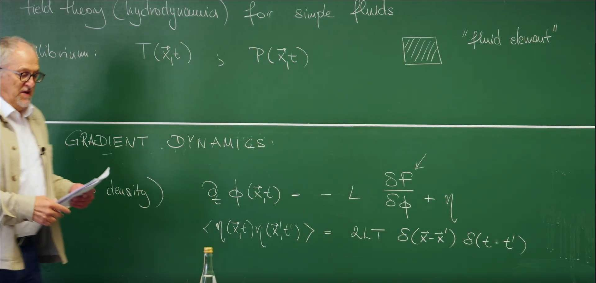
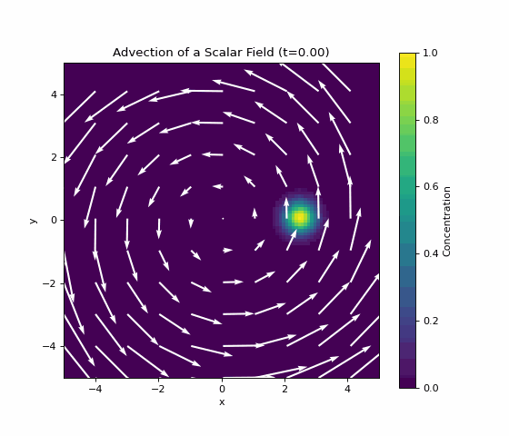

引言：从标量场到流体¶
在前面的课程中，我们已经为描述近平衡态的系统，建立了一套基于自由能 (Free Energy) 和昂萨格关系 (Onsager Relations) 的强大理论框架。然而，我们的讨论至今仍局限于单个标量序参量 (scalar order parameter) \(\phi(x,t)\) 的演化。
这节课我们的视角将从描述抽象序参量的梯度动力学 (Gradient Dynamics) ，拓展至描绘物理世界中最普遍的宏观运动——流体动力学 (Hydrodynamics) 。这并非简单地增加几个变量，而是进入了一个全新的物理描述范畴。
我们将发现，支配流体运动的方程，其底层逻辑与我们之前学到的知识一脉相承，都源于物理学最根本的对称性 (symmetries) 与守恒律 (conservation laws) 。这节课的核心任务，就是从最基本的第一性原理出发，为一种最理想化的流体——无摩擦流体 (frictionless fluid) ——构建其完整的动力学方程组。
我们将系统性地推导三大基本守恒定律： 1. 质量守恒 (Mass Conservation) 2. 动量守恒 (Momentum Conservation) 3. 能量守恒 (Energy Conservation)
通过这个过程，我们将推导出流体力学中两个里程碑式的方程——连续性方程 (Continuity Equation) 和欧拉方程 (Euler Equation) ，并揭示理想流体运动的深刻热力学本质。
1. 从梯度动力学到流体动力学¶
在我们对近平衡系统动力学的探索中，已经深入研究了描述单个标量场 (scalar field) \(\phi(x,t)\)演化的梯度动力学 (Gradient Dynamics)。为了更好地衔接本讲的内容，Erwin Frey 教授首先简要回顾了其核心思想，并阐明它是如何自然地引向更为宏大和普适的流体动力学理论的。

1.1 回顾：两种弛豫模型¶
在前面的课程中，我们学习到，梯度动力学主要分为两种模型，其根本区别在于所描述的序参量是否守恒 (conserved) 。
- 模型 A (Model A: 非守恒场, non-conserved field) ：其动力学由一个局域的朗之万方程描述：
其噪声项满足：
该方程描述了一个局域的弛豫 (relaxation) 过程。场量 \(\phi\) 在空间中任何一点的数值都可以独立地增加或减少，其变化的驱动力来自于系统自由能 (Free Energy) \(F\) 的降低。\(L\) 是一个动力学系数 (kinetic coefficient) ，\(\eta\) 代表热噪声 (thermal noise) 。
-
模型 B (Model B: 守恒场, conserved field) ：其动力学必须遵循连续性方程 (continuity equation) 的形式： $$ \frac{\partial \phi(\vec{x},t)}{\partial t} = -\nabla \cdot \vec{J} $$ 其中，流 (flux) \(\vec{J}\) 由化学势的梯度驱动： $$ \vec{J} = -M \nabla \frac{\delta F}{\delta \phi} + \vec{\eta}_J $$
其涨落流项满足： $$ \langle \eta_{J\alpha}(\vec{x}, t) \eta_{J\beta}(\vec{x}', t') \rangle = 2MT \delta_{\alpha\beta} \delta(\vec{x} - \vec{x}') \delta(t - t') $$
这个形式在物理上有着本质的不同。它表明场量 \(\phi\) 的总量是守恒的，不能在空间中凭空产生或消失。任何局域场量的变化，都必须源于一个物理的流 (flux or current) \(\vec{J}\) 流入或流出该区域。(注：此处采用了更完整的模型B表达式，其中M通常被称为迁移率(Mobility)。在板书回顾中，教授为了简洁可能省略了梯度算子 \(\nabla\))
1.2 流体动力学作为普适理论¶
这节课将从描述单个标量场的模型B转向的流体动力学 (Hydrodynamics) 。模型 B 的方程形式 \(\frac{\partial (\text{密度})}{\partial t} + \nabla \cdot (\text{流}) = 0\) 不仅仅是描述一个序参量的方程，它实际上是物理学中所有守恒律 (conservation laws) 的通用数学模板。
流体动力学的核心任务，正是将这个普适的数学框架，从描述单个抽象的序参量，推广到描述任何流体都必须服从的、一组最基本的守恒量 (conserved quantities) 。这些守恒量，即质量、动量和能量 ，是任何宏观系统在低频（长时间尺度）和长波（大空间尺度）下的主导自由度。因为它们的改变只能通过长距离的输运来完成，所以它们是系统中最“慢”的变量。
因此，流体动力学是一套极其普适的理论，它不关心微观细节（如分子间的具体作用力），只专注于系统最基本的对称性与守恒定律。本讲的全部内容，就是为流体的质量、动量和能量这三个基本守恒量，寻找它们各自对应的“流”，也即通量 (flux) ，并构建起描述理想流体（无摩擦流体）的完整动力学方程组。
2. 构建理论的基石：基本假设与描述场¶
为了建立一套能够描述流体宏观运动的普适理论，我们无需深入到每个分子的具体行为。相反，我们从两个强大且根本的物理假设出发，并在此基础上定义一套能够描述流体状态的宏观场 (macroscopic fields) 。
2.1 假设一：连续介质与“流体元”¶
我们首先引入连续介质假设 (Continuous Medium Assumption) 。在这个假设下，我们忽略流体的微观分子结构，将其视为一个可以无限分割的连续物质。为了在数学上处理这个连续体，我们定义一个核心概念——“流体元” (fluid element) 。

一个“流体元”是这样一个小体积：
- 在宏观尺度上，它足够小，可以被近似为一个数学上的点 \((\vec{x}, t)\)，从而允许我们使用微积分工具（如梯度、散度）来描述物理量的空间变化。
- 在微观尺度上，它又足够大，内部包含了数量巨大的分子。这使得诸如密度、压强、温度等统计物理量可以在其中被良好地定义，其内部的涨落可以被平均掉。
正如教授在课堂上提到的，这个假设的适用范围惊人地广泛，即使在20-30纳米的尺度上，对于像水这样的流体，连续介质描述在大多数情况下依然有效。
2.2 假设二：局域热平衡¶
这是流体动力学理论的第二个基石：局域平衡假设 (Local Equilibrium Assumption) 。它指出：
即使整个流体系统宏观上处于非平衡态（例如，存在流动、温度梯度等），我们仍然可以认为每一个“流体元”在任何时刻都处于其自身的内部热力学平衡状态。
这个假设的威力在于，它允许我们在每个时空点 \((\vec{x}, t)\) 上，定义一系列局域的热力学状态变量，例如局域温度 \(T(\vec{x}, t)\) 和局域压强 \(P(\vec{x}, t)\)。正因如此，我们才能将平衡态热力学的全部强大工具和关系式（如热力学第一定律、吉布斯关系等）应用于描述一个动态演化中的、非平衡的流体系统。
2.3 流体动力学的基本场：守恒的慢变量¶
基于以上假设，我们需要选择一套最基本的物理场来描述流体的状态。我们应该选择哪些场呢？理论物理的指导原则是：选择系统的慢变量，因为它们决定了系统在长时间、大尺度下的宏观动力学。在一个流体系统中，最“慢”的变量正是那些守恒量，因为它们的改变只能通过长距离的物质输运来完成。
对于一个简单流体 (simple fluid) （即由单一组分构成的流体），我们选择以下三个基本守恒场的密度来描述其状态：
-
质量密度场 (mass density) \(\rho(\vec{x}, t)\)：单位体积内的流体质量。这是我们最基本的标量场。
-
动量密度场 (momentum density) \(\vec{g}(\vec{x}, t)\)：单位体积内的流体动量。它是一个矢量场，与流体的速度场 (velocity field) \(\vec{v}(\vec{x}, t)\) 密切相关，其定义为：
$$ \vec{g}(\vec{x}, t) = \rho(\vec{x}, t) \vec{v}(\vec{x}, t) $$
速度场 \(\vec{v}(\vec{x}, t)\) 将是我们要求解的核心变量之一。
- 能量密度场 (energy density) \(\epsilon(\vec{x}, t)\)：在流体动力学的构建中，我们通常关注的是单位质量的内能 (internal energy per unit mass) 。流体的总能量密度还需要额外考虑宏观流动的动能，我们将在能量守恒部分详细讨论。
角动量也是一个守恒量，但在没有内部自旋或外部扭矩的情况下，其动力学可以由动量场的演化导出，因此我们在这里不把它作为独立的基本场。
有了这套基本假设和描述场，我们接下来就可以为每一个守恒量构建其对应的动力学方程了。
3. 第一支柱：质量守恒与连续性方程 (Continuity Equation)¶
现在，我们开始应用在第一节中建立的守恒律框架。第一个，也是最简单的一个基本支柱，来自于质量守恒定律 (mass conservation law) 。我们的任务是为质量这个守恒量，找出其对应的“密度”和“流”。
3.1 积分形式：物理直觉的体现¶
我们从最直观的物理图像出发：考虑空间中一个任意固定的控制体积 \(V\)，其表面为 \(\partial V\)。质量守恒的物理直觉是：“一个封闭体积内总质量的变化，只能通过物质流穿过其边界来实现”。
-
“密度”: 描述质量的密度就是质量密度场 (mass density) \(\rho(\vec{x}, t)\)。因此，体积 \(V\) 内的总质量为 \(M = \int_V dV \, \rho(\vec{x}, t)\)。
-
“流”: 描述质量流动的物理量是质量流 (mass current) 或质量通量 (mass flux) \(\vec{J}(\vec{x}, t)\)。对于一个速度为 \(\vec{v}\) 的流体，这个通量直观地等于密度乘以速度：\(\vec{J}(\vec{x}, t) = \rho(\vec{x}, t) \vec{v}(\vec{x}, t)\)。
-
守恒定律: 体积内总质量的变化率，必须等于净流入该体积的质量。通过表面 \(\partial V\) 向外流出的总通量为 \(\oint_{\partial V} d\vec{S} \cdot \vec{J}\)，其中 \(d\vec{S} = \hat{n} dS\) 是指向体积外部的面积微元。因此，质量守恒的积分形式可以写为：
\[\frac{d}{dt} \int_V dV \, \rho = -\oint_{\partial V} d\vec{S} \cdot \vec{J}\]等式右边的负号表示，当净通量为正（向外流）时，内部质量减少。
3.2 微分形式：局域的守恒定律¶
积分形式描述的是整个体积的宏观行为。为了得到一个适用于空间每一点的局域方程，我们使用高斯散度定理 (Gauss's Divergence Theorem) 将上式中的面积分转换成体积分：
代入积分形式的守恒方程，并将时间导数移入积分号内，我们得到：
由于这个关系式必须对任意选取的控制体积 \(V\) 都成立，因此被积函数本身必须处处为零。这样，我们就得到了质量守恒的微分形式，即连续性方程 (Continuity Equation) ：
这个方程是流体动力学的第一个基本方程。它完美地体现了模型 B 的守恒律结构，并为我们接下来推导其他方程奠定了基础。
4. 第二支柱：动量守恒与欧拉方程 (Euler Equation)¶
在建立了质量守恒之后，我们转向下一个守恒量——动量。对动量守恒的描述将为我们揭示流体如何运动的动力学规律。对于一个没有粘性（即无摩擦）的理想流体，这个规律由著名的欧拉方程 (Euler Equation) 给出 。
4.1 物质导数：连接“跟随者”与“观察者”的视角¶
推导动力学方程时，我们面临一个核心的视角问题：牛顿第二定律（\(\vec{F}=m\vec{a}\)）是应用于一个具体的物体（即一个特定的“流体元”）的，描述的是这个物体自身经历的加速度。这是一种“随波逐流”的拉格朗日视角 (Lagrangian View) 。然而，我们建立的场论是在实验室固定的坐标系中描述物理场如何演化的，这是一种“静观其变”的欧拉视角 (Eulerian View) 。
为了在这两种视角间建立桥梁，我们需要一个数学工具，它能回答这样一个问题：“一个跟随着流体运动的粒子，它所感受到的某个物理量 \(f\) 的总变化率是多少？” 这个工具就是物质导数 (Material Derivative) ，记作 \(\frac{D f}{D t}\) 。
一个跟随流体运动的粒子，其感受到的物理量 \(f(\vec{x}, t)\) 的变化来自两部分：
-
局域变化: 即使粒子不动，其所在位置 \(\vec{x}\) 的 \(f\) 值也可能随时间变化，这由偏导数 \(\frac{\partial f}{\partial t}\) 描述 。
-
对流变化 : 粒子被速度场 \(\vec{v}\) “携带”到了一个新的位置，而新位置的 \(f\) 值与原位置不同，这种由位置移动引起的变化被称为对流 (convection) ，由 \((\vec{v} \cdot \nabla)f\) 描述。
两者相加，便得到了物质导数的完整表达式：
这个导数完美地将欧拉视角下的场变化（\(\frac{\partial f}{\partial t}\)）和拉格朗日视角下的粒子运动（\(\vec{v}\)）结合在了一起。
4.2 欧拉方程：流体元的牛顿第二定律¶
现在我们可以将牛顿第二定律 \(\vec{F} = m \vec{a}\) 应用于一个体积为 \(dV\) 的流体元：
- 质量 \(m\)：\(m = \rho dV\)。
- 加速度 \(\vec{a}\)：流体元的加速度是其速度跟随流体运动时的变化率，因此必须使用物质导数：\(\vec{a} = \frac{D\vec{v}}{Dt}\)。
- 力 \(\vec{F}\)：对于一个无摩擦的理想流体，作用在流体元上的唯一的力来自于周围流体对它的压强 (pressure)。一个流体元受到的净压力来自于其表面两侧的压强差，这个净力等于压强的负梯度乘以体积：\(\vec{F} = -(\nabla P) dV\) 。
将以上三项代入牛顿第二定律：
消去 \(dV\) 并展开物质导数，我们就得到了欧拉方程 (Euler Equation) 的最终形式：
这个方程描述了无粘性流体的速度场如何因压强梯度而随时间和空间演化。其中，非线性对流项 (nonlinear convective term) \((\vec{v} \cdot \nabla) \vec{v}\) 是流体力学丰富性和复杂性的核心来源。正是这个速度场与自身梯度相乘的项，主导了动量在流体中的自身输运，并最终导致了诸如湍流、涡旋等复杂的流体现象。
4.3 动量通量张量：守恒定律的统一视角¶
为了与质量守恒的形式保持一致，我们可以利用连续性方程，将欧拉方程严格地改写成动量守恒的“密度-流”形式：
这里的“密度”是动量的第 \(i\) 个分量 \(\rho v_i\)，而“流”则是一个更复杂的对象——动量通量张量 (momentum flux tensor) \(\Pi_{ik}\) 。对于无摩擦流体，其定义为：
这个二阶张量 \(\Pi_{ik}\) 的物理意义是：动量的第 \(i\) 个分量，通过一个法向指向第 \(k\) 个方向的单位面积，在单位时间内的输运量 。它由两部分截然不同的物理过程贡献：
-
静水压强项 (Hydrostatic pressure term) \(P \delta_{ik}\)：这代表了由于分子无规则热运动而产生的动量交换，表现为宏观的各向同性压强。克罗内克符号 (Kronecker delta) \(\delta_{ik}\) 确保了它只贡献法向应力。
-
对流输运项 (Convective transport term) \(\rho v_i v_k\)：这代表了由于流体宏观的整体运动而携带的动量输运。它是动量的第 \(i\) 分量被速度的第 \(k\) 分量“携带”通过平面的结果。这是一个各向异性的贡献，其大小和方向依赖于流动的方向。这个项也被称为二合积 (dyadic product) 。
通过引入动量通量张量，我们成功地将复杂的欧拉方程，也统一到了 \(\frac{\partial (\text{密度})}{\partial t} + \nabla \cdot (\text{流}) = 0\) 这一普适的守恒律框架之下。
4.4 可视化模拟：Python 实现标量场的对流¶
我们推导了欧拉方程，并遇到了核心的非线性对流项 (nonlinear convective term) \((\vec{v} \cdot \nabla) \vec{v}\)。为了直观地理解这个抽象的数学表达式——一个矢量场如何“输运”它自身——我们可以先通过一个更简单的例子来建立物理图像：一个给定的速度场 \(\vec{v}\) 是如何输运一个标量场 \(c\)（例如一滴染料的浓度）的。
这个过程由纯对流方程描述：
下面的 Python 模拟将精确地展示这一过程。我们将初始化一团高斯分布的“染料”，并将它置于一个固定的旋转涡旋速度场中，观察它是如何被“卷动”和输运的。
import numpy as np
import matplotlib.pyplot as plt
from matplotlib.animation import FuncAnimation
# --- 1. Set simulation parameters ---
grid_size = 100 # Grid size
L = 10.0 # Spatial size (-L/2 to L/2)
dt = 0.01 # Time step
n_steps = 300 # Total steps
omega = 1.0 # Vortex angular velocity
# --- 2. Create grid and field ---
x = np.linspace(-L/2, L/2, grid_size)
y = np.linspace(-L/2, L/2, grid_size)
X, Y = np.meshgrid(x, y)
# Initial scalar field: a Gaussian "dye drop"
c = np.exp(-((X - L/4)**2 + Y**2) / (0.5**2))
# Velocity field: a vortex rotating around the origin
vx = -omega * Y
vy = omega * X
# --- 3. Set up plot ---
fig, ax = plt.subplots(figsize=(7, 6))
# Plot scalar field c
im = ax.imshow(c, extent=[-L/2, L/2, -L/2, L/2], origin='lower',
cmap='viridis', vmin=0, vmax=1)
fig.colorbar(im, label='Concentration')
# Plot velocity field v (plot every 10 points to keep it clear)
skip = 10
ax.quiver(X[::skip, ::skip], Y[::skip, ::skip],
vx[::skip, ::skip], vy[::skip, ::skip],
color='white', scale=30)
ax.set_title("Advection of a Scalar Field (t=0.00)")
ax.set_xlabel("x")
ax.set_ylabel("y")
ax.set_aspect('equal')
# --- 4. Define animation update function ---
def animate(frame):
global c
# Calculate gradient of scalar field
# np.gradient returns dy, dx order [10, 11]
grad_c_y, grad_c_x = np.gradient(c, y, x)
# Calculate advection term v dot grad(c)
advection_term = vx * grad_c_x + vy * grad_c_y
# Update scalar field using forward Euler method
c = c - advection_term * dt
# Update image data
im.set_array(c)
ax.set_title(f"Advection of a Scalar Field (t={frame*dt:.2f})")
return [im]
# --- 5. Create and run animation ---
ani = FuncAnimation(fig, animate, frames=n_steps,
interval=30, blit=True)
# --- 6. Save animation as GIF file ---
# Note: This requires ImageMagick or ffmpeg
# If not installed, you can install with:
# Windows: conda install -c conda-forge imagemagick
# macOS: brew install imagemagick
# Linux: sudo apt-get install imagemagick
ani.save('advection.gif', writer='pillow', dpi=80, fps=20)
plt.show()

- 输运 (Transport) ：整块“染料”被旋转的速度场带着做圆周运动，其整体位置发生了改变。
- 变形 (Deformation) ：更重要的是，由于速度场不是均匀的（越靠近中心的点速度越小，越外侧的点速度越大），“染料滴”并不仅仅是平移，它在运动过程中被不断地拉伸和扭曲。
诠释了 \((\vec{v} \cdot \nabla)f\) 的含义：它描述的正是物理量 \(f\) 如何被流场 \(\vec{v}\) “携带”着在空间中移动和重新分布。在欧拉方程中，被携带的物理量正是速度场 \(\vec{v}\) 自身，这便是动量被流体自身输运的物理图像。
5. 第三支柱：能量守恒与等熵流¶
在确立了质量和动量守恒之后，我们来推导最后一个、也是最深刻的守恒定律——能量守恒 (Energy Conservation) 。正如教授所言，这个推导不那么直观，因为它要求我们将之前推导的动力学方程与热力学紧密结合起来。这个过程最终将揭示无摩擦流体一个至关重要的热力学特性。
5.1 流体的总能量密度¶
一个流体元的总能量由两部分组成：由宏观整体运动贡献的动能 (kinetic energy) ，和由微观分子无规则运动贡献的内能 (internal energy) 。因此，单位体积的总能量密度为：
其中 \(\epsilon\) 是单位质量的内能 。我们的目标，依然是为这个守恒的能量密度找到其对应的能量流 (energy current) \(\vec{J}^{(\epsilon)}\)，使其满足守恒律的一般形式：\(\frac{\partial e_{\text{total}}}{\partial t} = -\nabla \cdot \vec{J}^{(\epsilon)}\)。
5.2 能量守恒定律的推导¶
这是一个较为复杂的推导，我们将跟随课堂的思路，将总能量分为动能和内能两部分，分别计算它们的时间导数。
1. 动能项的时间导数：¶
我们首先计算动能密度 \(\frac{1}{2} \rho v^2\) 的时间导数。利用乘法法则，并代入我们已经推导出的连续性方程（用于 \(\partial_t \rho\)）和欧拉方程（用于 \(\partial_t \vec{v}\)），经过一系列代数运算，可以得到：
这个表达式的物理含义是：动能密度的局域变化，一部分来自于动能的对流（第一项，一个完美的通量散度形式），另一部分则来自于压强梯度对流体做功（第二项）。
2. 引入热力学关系：¶
为了处理内能项和压强项，我们需要引入热力学的基本关系。根据局域平衡假设，每个流体元都满足吉布斯关系。对于单位质量的内能 \(\epsilon\)，其变化量为：
其中 \(s\) 是单位质量的熵，\(v_s = 1/\rho\) 是比容 (specific volume) 。
在流体动力学中，处理压强时，引入焓 (Enthalpy) 通常更为方便。单位质量的焓（比焓）\(h\) 定义为：
它的全微分为 \(dh = Tds + \frac{1}{\rho}dP\)。
3. 组合与化简：¶
利用上述热力学关系，我们可以处理内能项的时间导数 \(\partial_t(\rho\epsilon)\) ，并将动能方程中的压强梯度项 \(\nabla P\) 替换为与焓和熵相关的项。这是一个繁琐但逻辑直接的代数过程。将动能和内能两部分的演化方程相加，最终可以得到总能量密度的守恒方程：
5.3 等熵条件：无摩擦的必然结果¶
观察上式的最终形式，它几乎是一个完美的守恒方程，除了最后一项。左边是能量密度的时间导数，右边第一项是一个通量的散度。为了让能量真正守恒，方程右侧的源/汇项必须为零。这意味着：
由于 \(\rho\) 和 \(T\) 通常不为零，我们得到了一个深刻的物理结论：
这个方程的含义是：对于一个无摩擦、无热传导的理想流体，每一个流体元在跟随流体运动的过程中，其熵保持不变。这种流动被称为等熵流 (Isentropic Flow) 。这正是我们最初“无摩擦、无耗散”假设在热力学上的必然结果：因为没有任何内部摩擦产生不可逆的热量，流体元的演化是可逆的，因此其熵不增加。
5.4 能量流的物理意义¶
在等熵条件下，源项为零，我们便可以清晰地识别出能量流 (energy current) 的表达式：
这个表达式的物理含义非常丰富。它表明能量是通过对流方式输运的，输运的载体是质量流 \(\rho\vec{v}\)，而被输运的量是单位质量的总能量 \(\left( \frac{1}{2} v^2 + h \right)\)。
这里最值得注意的是，被输运的不是内能 \(\epsilon\)，而是比焓 \(h\) 。这并非偶然的数学巧合，而是有着深刻的物理原因。焓的定义是 \(h = \epsilon + P/\rho\)。其中，\(P/\rho\) 这一项（或对一个宏观系统而言的 \(PV\)）代表了流动功 (flow work) 。它是在一个有压强的环境中，将一个流体元推入相邻区域所必须做的功。因此，当流体流动时，它不仅携带了自身的动能和内能，还必须“推开”前面的流体并被后面的流体“推动”，这部分能量交换正好由 \(P/\rho\) 来衡量。焓作为一个热力学势，恰好将内能和流动功这两部分能量打包在了一起。所以，能量流中出现的是焓，而不是内能。
5.5 代码实践：用欧拉网格法模拟流体¶
我们将采用一种更直接的宏观方法——基于欧拉网格 (Eulerian Grid) 的求解器，直接对流体动力学方程进行数值求解。我们将要实现的算法，是计算机图形学领域非常经典的“稳定流体” (Stable Fluids) 方法。
该算法的核心，是将流体的演化分解为几个在物理上清晰的步骤，并在每个时间步内依次执行：
-
平流 (Advection) ：此步骤负责移动流体自身的物理属性，如速度和颜色（染料）。它回答了这个问题：“下一刻，当前位置的流体将移动到哪里？”。我们采用一种高效的半拉格朗日法 (Semi-Lagrangian method) ，通过时间回溯来计算当前网格点上的物理量应该从上一时刻的哪个位置“继承”而来。
-
施加外力 (External Forces) ：在这一步，我们可以向流体中加入各种力或源。在我们的模拟中，这主要体现为从一个指定区域持续“注入”新的染料和速度。
-
投影 (Projection) ：这是确保流体运动真实自然最关键的一步。它的唯一目标是保证流场满足不可压缩性 (incompressibility) ，即流体的散度为零 (\(\nabla \cdot \vec{v} = 0\))。这一步本身又分为三个子任务： a. 计算当前速度场的散度 (divergence) ，找到那些不满足不可压缩条件的区域。 b. 求解一个压力泊松方程 (Pressure Poisson Equation) ，即 \(\nabla^2 p = \nabla \cdot \vec{v}\)。解出的压力场 \(p\) 告诉我们，需要在何处施加压力来“修正”流体的流向。 c. 用计算出的压力梯度 \(\nabla p\) 来修正速度场，最终得到一个散度为零、满足不可压缩条件的新速度场。
我们将使用强大的共轭梯度法 (Conjugate Gradient method) 来高效求解压力泊松方程，并利用 Taichi 框架的并行计算能力为整个模拟过程加速。
# Eulerian Fluid Simulation with Conjugate Gradient Solver
# Based on: https://github.com/JerryYan97/Taichi_HW1_EulerianFluid
import taichi as ti
ti.init(arch=ti.gpu)
# General settings
resolutionX = 512
pixels = ti.Vector.field(3, dtype=ti.f32, shape=(resolutionX, resolutionX)) # Use RGB color
dt = 0.02
pause = False
temp_dye = 1.0
pixel_mid = resolutionX // 2
ix_length = 5
iy_length = 10
area = ti.Vector([8, pixel_mid - iy_length, 8 + ix_length, pixel_mid + iy_length])
inflow_velocity = ti.Vector([3.0, 0.0])
# Grid settings
_velocities = ti.Vector.field(2, dtype=ti.f32, shape=(resolutionX, resolutionX))
_new_velocities = ti.Vector.field(2, dtype=ti.f32, shape=(resolutionX, resolutionX))
velocity_divs = ti.field(dtype=ti.f32, shape=(resolutionX, resolutionX))
_pressures = ti.field(dtype=ti.f32, shape=(resolutionX, resolutionX))
_new_pressures = ti.field(dtype=ti.f32, shape=(resolutionX, resolutionX))
_dye_buffer = ti.Vector.field(3, dtype=ti.f32, shape=(resolutionX, resolutionX)) # RGB dye
_new_dye_buffer = ti.Vector.field(3, dtype=ti.f32, shape=(resolutionX, resolutionX))
# CG settings
b = ti.field(dtype=ti.f32, shape=resolutionX * resolutionX)
p = ti.field(dtype=ti.f32, shape=resolutionX * resolutionX)
Ax = ti.field(dtype=ti.f32, shape=resolutionX * resolutionX)
Ap = ti.field(dtype=ti.f32, shape=resolutionX * resolutionX)
r = ti.field(dtype=ti.f32, shape=resolutionX * resolutionX)
new_r = ti.field(dtype=ti.f32, shape=resolutionX * resolutionX)
# TexPair class for buffer swapping
class TexPair:
def __init__(self, cur, nxt):
self.cur = cur
self.nxt = nxt
def swap(self):
self.cur, self.nxt = self.nxt, self.cur
# Interpolation functions
@ti.func
def sample(qf, u, v, res):
i, j = int(u), int(v)
# Nearest
i = max(0, min(res - 1, i))
j = max(0, min(res - 1, j))
return qf[i, j]
@ti.func
def lerp(vl, vr, frac):
# frac: [0.0, 1.0]
return vl + frac * (vr - vl)
@ti.func
def bilerp(vf, u, v, res):
s, t = u - 0.5, v - 0.5
# floor
iu, iv = int(s), int(t)
# fract
fu, fv = s - iu, t - iv
a = sample(vf, iu + 0.5, iv + 0.5, res)
b = sample(vf, iu + 1.5, iv + 0.5, res)
c = sample(vf, iu + 0.5, iv + 1.5, res)
d = sample(vf, iu + 1.5, iv + 1.5, res)
return lerp(lerp(a, b, fu), lerp(c, d, fu), fv)
velocities_pair = TexPair(_velocities, _new_velocities)
pressures_pair = TexPair(_pressures, _new_pressures)
dyes_pair = TexPair(_dye_buffer, _new_dye_buffer)
@ti.func
def vel_with_boundary(vf: ti.template(), i: int, j: int) -> ti.f32:
if (i == j == 0) or (i == j == resolutionX - 1) or (i == 0 and j == resolutionX - 1) or (
i == resolutionX - 1 and j == 0):
vf[i, j] = ti.Vector([0.0, 0.0])
elif i == 0:
vf[i, j] = -vf[1, j]
elif j == 0:
vf[i, 0] = -vf[i, 1]
elif i == resolutionX - 1:
vf[resolutionX - 1, j] = -vf[resolutionX - 2, j]
elif j == resolutionX - 1:
vf[i, resolutionX - 1] = -vf[i, resolutionX - 2]
return vf[i, j]
@ti.func
def p_with_boundary(pf: ti.template(), i: int, j: int) -> ti.f32:
if (i == j == 0) or (i == j == resolutionX - 1) or (i == 0 and j == resolutionX - 1) or (
i == resolutionX - 1 and j == 0):
pf[i, j] = 0.0
elif i == 0:
pf[0, j] = pf[1, j]
elif j == 0:
pf[i, 0] = pf[i, 1]
elif i == resolutionX - 1:
pf[resolutionX - 1, j] = pf[resolutionX - 2, j]
elif j == resolutionX - 1:
pf[i, resolutionX - 1] = pf[i, resolutionX - 2]
return pf[i, j]
@ti.kernel
def apply_vel_bc(vf: ti.template()):
for i, j in vf:
vel_with_boundary(vf, i, j)
@ti.kernel
def apply_p_bc(pf: ti.template()):
for i, j in pf:
p_with_boundary(pf, i, j)
@ti.kernel
def advect(vf: ti.template(), qf: ti.template(), new_qf: ti.template()):
for IX, IY in vf:
# Backtrace using semi-lagrangian with 2nd order Runge-Kutta
coord_curr = ti.Vector([IX, IY]) + ti.Vector([0.5, 0.5])
vel_curr = vf[IX, IY]
coord_mid = coord_curr - 0.5 * dt * vel_curr
vel_mid = bilerp(vf, coord_mid[0], coord_mid[1], resolutionX)
coord_prev = coord_curr - dt * vel_mid
# Get previous quality
q_prev = bilerp(qf, coord_prev[0], coord_prev[1], resolutionX)
# Update current quality
new_qf[IX, IY] = q_prev
@ti.kernel
def addInflow(qf: ti.template(), area: ti.template(), quality: ti.template()):
bl_ix, bl_iy, tr_ix, tr_iy = area[0], area[1], area[2], area[3]
for i, j in qf:
if bl_ix <= i <= tr_ix and bl_iy <= j <= tr_iy:
qf[i, j] = quality
@ti.kernel
def fill_color(ipixels: ti.template(), idyef: ti.template()):
for i, j in ipixels:
# Convert dye density to color display
density = ti.min(1.0, ti.max(0.0, idyef[i, j].norm()))
# Generate color based on density - blue to red gradient
ipixels[i, j] = ti.Vector([
ti.min(density * 2.0, 1.0), # Red component
ti.max(0.0, density * 2.0 - 1.0), # Green component
ti.max(0.0, 1.0 - density * 2.0) # Blue component
])
@ti.func
def coeff_matrix(row: int, col: int) -> ti.f32:
res = 0.0
n = resolutionX * resolutionX
IY = row // resolutionX
IX = row - resolutionX * IY
if row >= n or row < 0 or col >= n or col < 0:
res = 0.0
else:
if (IX == IY == 0) or (IX == IY == resolutionX - 1) or (IX == 0 and IY == resolutionX - 1) or (
IX == resolutionX - 1 and IY == 0):
if row == col:
res = 1.0
else:
res = 0.0
if row == col:
res = -4.0
elif ti.abs(col - row) == 1:
res = 1.0
elif ti.abs(col - row) == resolutionX:
res = 1.0
return res
@ti.func
def visit_vector(v: ti.template(), vid: int, length: int) -> ti.f32:
res = 0.0
if vid < 0 or vid >= length:
res = 0.0
else:
res = v[vid]
return res
@ti.func
def visit_pf_vector(pf: ti.template(), vid: int) -> ti.f32:
res = 0.0
n = resolutionX * resolutionX
if vid >= n or vid < 0:
res = 0.0
else:
IY = vid // resolutionX
IX = vid - resolutionX * IY
res = pf[IX, IY]
return res
@ti.kernel
def pressure_cg_init(pf: ti.template(), b: ti.template()):
n = resolutionX * resolutionX
for row in range(n):
ve1 = visit_pf_vector(pf, row - resolutionX)
ve2 = visit_pf_vector(pf, row - 1)
ve3 = visit_pf_vector(pf, row)
ve4 = visit_pf_vector(pf, row + 1)
ve5 = visit_pf_vector(pf, row + resolutionX)
me1 = coeff_matrix(row, row - resolutionX)
me2 = coeff_matrix(row, row - 1)
me3 = coeff_matrix(row, row)
me4 = coeff_matrix(row, row + 1)
me5 = coeff_matrix(row, row + resolutionX)
temp_Ax = me1 * ve1 + me2 * ve2 + me3 * ve3 + me4 * ve4 + me5 * ve5
Ax[row] = temp_Ax
r[row] = b[row] - Ax[row]
p[row] = r[row]
@ti.kernel
def pressure_cg_iter(pf: ti.template()) -> ti.f32:
n = resolutionX * resolutionX
rkT_rk = 0.0
pkT_A_pk = 0.0
for i in range(n):
rkT_rk += (r[i] * r[i])
ve1 = visit_vector(p, i - resolutionX, n)
ve2 = visit_vector(p, i - 1, n)
ve3 = visit_vector(p, i, n)
ve4 = visit_vector(p, i + 1, n)
ve5 = visit_vector(p, i + resolutionX, n)
me1 = coeff_matrix(i, i - resolutionX)
me2 = coeff_matrix(i, i - 1)
me3 = coeff_matrix(i, i)
me4 = coeff_matrix(i, i + 1)
me5 = coeff_matrix(i, i + resolutionX)
temp_Ap = me1 * ve1 + me2 * ve2 + me3 * ve3 + me4 * ve4 + me5 * ve5
Ap[i] = temp_Ap
pkT_A_pk += (p[i] * temp_Ap)
alpha = rkT_rk / pkT_A_pk
res = 0.0
top = 0.0
bottom = 0.0
for i in range(n):
IY = i // resolutionX
IX = i - resolutionX * IY
new_pf_val = pf[IX, IY] + alpha * p[i]
diff = ti.abs(new_pf_val - pf[IX, IY])
res += (diff * diff)
pf[IX, IY] = new_pf_val
new_r_val = r[i] - alpha * Ap[i]
new_r[i] = new_r_val
top += (new_r_val * new_r_val)
bottom += (r[i] * r[i])
beta = top / bottom
for i in range(n):
p[i] = new_r[i] + beta * p[i]
r[i] = new_r[i]
res = ti.sqrt(res)
return res
@ti.kernel
def construct_cg_b(divf: ti.template(), b: ti.template()):
for IX, IY in divf:
if (0 < IX < resolutionX - 1) and (0 < IY < resolutionX - 1):
b[IY * resolutionX + IX] = divf[IX, IY]
else:
b[IY * resolutionX + IX] = 0.0
def pressure_cg(pf_pair, divf: ti.template()):
residual = 10
counter = 0
construct_cg_b(divf, b)
pressure_cg_init(pf_pair.cur, b)
while residual > 0.01:
residual = pressure_cg_iter(pf_pair.cur)
counter += 1
if counter > 30:
break
apply_p_bc(pf_pair.cur)
@ti.kernel
def divergence(field: ti.template(), divf: ti.template()):
for i, j in field:
divf[i, j] = 0.5 * (field[i + 1, j][0] - field[i - 1, j][0] + field[i, j + 1][1] - field[i, j - 1][1])
@ti.kernel
def correct_divergence(vf: ti.template(), vf_new: ti.template(), pf: ti.template()):
for i, j in vf:
vf_new[i, j] = vf[i, j] - ti.Vector([(pf[i + 1, j] - pf[i - 1, j]) / 2.0, (pf[i, j + 1] - pf[i, j - 1]) / 2.0])
gui = ti.GUI('Colorful Fluid Simulation', (512, 512))
frame_counter = 0
# Initial dye color is blue
initial_dye_color = ti.Vector([0.2, 0.2, 1.0])
while True:
while gui.get_event(ti.GUI.PRESS):
if gui.event.key in [ti.GUI.ESCAPE, ti.GUI.EXIT]:
exit(0)
if gui.event.key == ti.GUI.SPACE:
pause = not pause
if not pause:
for itr in range(15):
# Add inflow
addInflow(velocities_pair.cur, area, inflow_velocity)
addInflow(dyes_pair.cur, area, initial_dye_color)
# Advection calculation
apply_vel_bc(velocities_pair.cur)
advect(velocities_pair.cur, velocities_pair.cur, velocities_pair.nxt)
advect(velocities_pair.cur, dyes_pair.cur, dyes_pair.nxt)
velocities_pair.swap()
dyes_pair.swap()
apply_vel_bc(velocities_pair.cur)
# Projection step
divergence(velocities_pair.cur, velocity_divs)
pressure_cg(pressures_pair, velocity_divs)
correct_divergence(velocities_pair.cur, velocities_pair.nxt, pressures_pair.cur)
velocities_pair.swap()
fill_color(pixels, dyes_pair.cur)
frame_counter += 1
filename = f'./video/frame_{frame_counter:05d}.png'
gui.set_image(pixels.to_numpy())
try:
gui.show(filename)
except:
gui.show()
运行代码输出
我们看到的这些复杂的羽流、卷曲和混合现象，都是由动量方程中的非线性对流项 \((\vec{v} \cdot \nabla)\vec{v}\) 所主导的。这个看似简单的项，却是流体能够产生从简单层流到复杂湍流等无穷无尽模式的根源。
7. 总结¶
这节课，我们从梯度动力学的守恒模型出发，系统地构建了描述无摩擦、无热传导的简单流体的流体动力学理论框架。其核心是基于局域平衡假设 ，为流体的三个基本守恒量——质量、动量和能量——建立守恒定律方程。通过为每一个守恒“密度”推导出其对应的物理“通量”，我们最终得到了一套描述理想流体行为的封闭方程组，这便是理想流体动力学方程组 (Equations of Ideal Hydrodynamics) 。
下表总结了本讲的核心内容，清晰地展示了这三大守恒定律的统一结构：
| 守恒量 | 密度 | 守恒律（微分形式） | 通量/流 | 通量的物理解释 |
|---|---|---|---|---|
| 质量 | \(\rho\) | \(\partial_t \rho + \nabla \cdot (\rho \vec{v}) = 0\) | \(J = \rho \vec{v}\) | 由速度场输运的质量（对流）。 |
| 动量 | \(\rho v_i\) | \(\partial_t (\rho v_i) + \partial_k \Pi_{ik} = 0\) | \(\Pi_{ik} = P \delta_{ik} + \rho v_i v_k\) | 各向同性的压强力加上动量的对流输运。 |
| 能量 | \(\frac{1}{2} \rho v^2 + \rho \epsilon\) | \(\partial_t e_{\text{total}} + \nabla \cdot J^{(\epsilon)} = 0\) | \(J^{(\epsilon)} = \rho \vec{v} \left( \frac{1}{2} v^2 + h \right)\) | 由速度场输运的总能量（动能+焓）。 |
这个方程组是我们进一步理解更复杂流体现象的基石。至此，我们已经为流体世界构建了其最底层的、无耗散的“运动骨架”。在接下来的课程中，将在此基础上引入耗散效应 (dissipative effects) （如粘性和热传导），从理想的欧拉方程过渡到更普适的纳维-斯托克斯方程 (Navier-Stokes Equations) ，从而能够描述更加真实和复杂的流体现象。